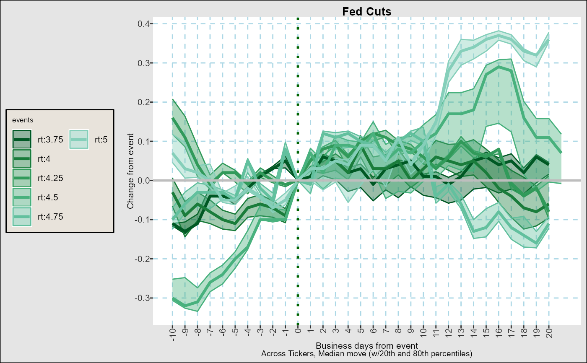
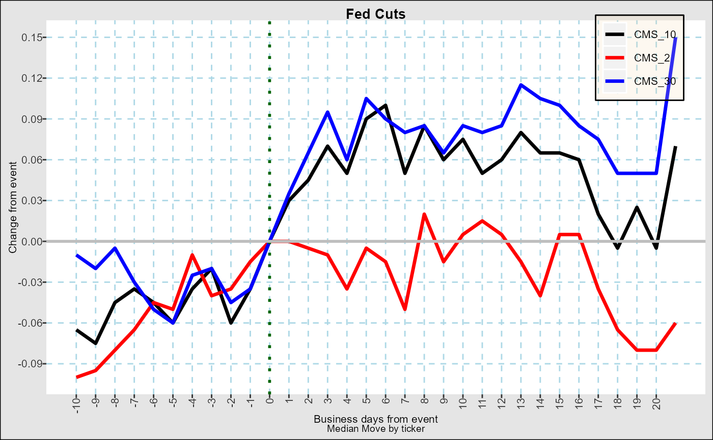
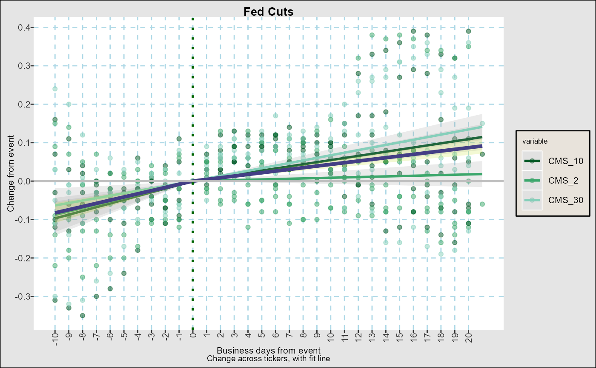
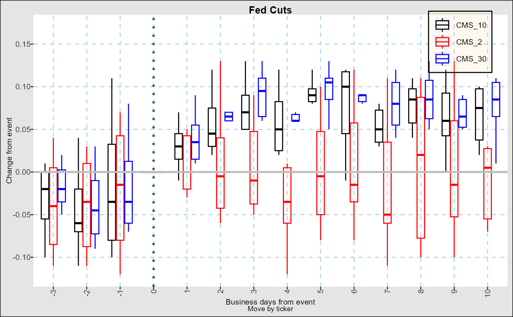
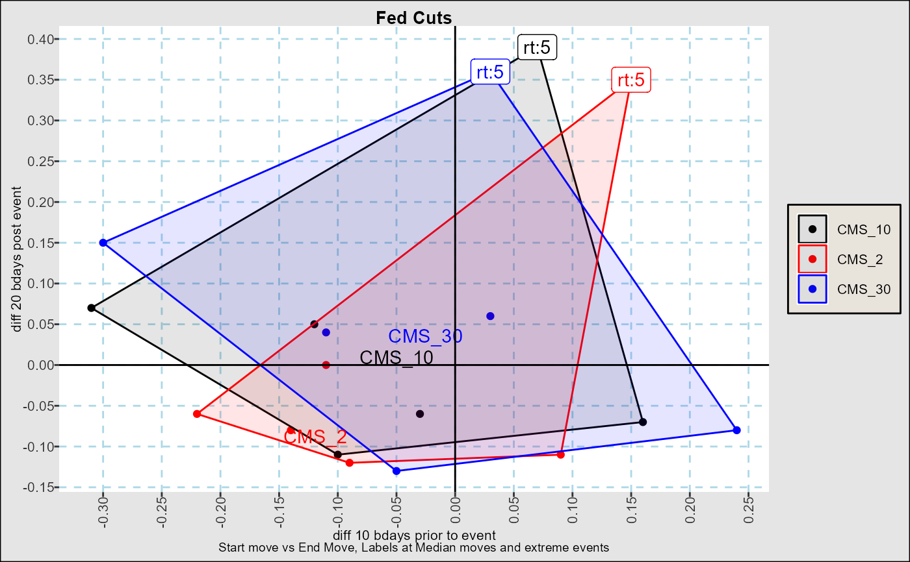

Summarizes and plots moves in data from a given set of event dates. Plots are designed to maintain reasonable aesthetics with as either time series or event dates increase.
fg_eventStudy(indata,dtset,output="path",changeas="diff",
nbd_back=10,nbd_fwd=20,n_color_switch=5,
title="Events",maxdelta=+Inf,meltvar="variable",verbose=FALSE)A data.frame with at least one date column and multiple numeric columns. If melted,
must also contain the character column specified in parameter meltvar#'
A list of dates or a data.table with a column of (event) dates and a character column with unique names for each date.
(Default path) : String with type of output desired. Choices are shown below by category:
data,summary,stats : data.table with eVent moves by asset and business day relative event, a summary of events by asset and eventid,
or statistics relative to a crossing of events and assets.
path, pathbyvar, pathbyevent Show paths of time series moves, by both events and time series, just by time series, or just by event.
lmbyvar, lmbyevent Show paths of time series moves by time series, or by event, but include linear regression of move ~ time.
loessbyvar, loessbyevent Show paths of time series moves by time series, or by event, but smoothed loess curves of move ~ time.
medbyvar,medbyevent Median moves by time series or by event.
box, boxbyvar,boxbyevent Box plots of moves by both events and time series, just by time series, or just by event.
scatter Scatter plot of cumulative move from event-nbd_back vs event+nbd_fwd, with medians and regions of movement.
(Default diff) Character string in c("diff","return","returnbps") describing how changes are displayed. Log returns are used.
(Default 10) Positive integer for number of days prior to event are considered.
(Default 20) Positive integer for number of days after event are considered.
(Default 5) A positive integer after which colors are displayed as gradients instead of separate colors. See Examples.
Character string for title of graph
(Default +Inf) Integer to cut off the number of days forward shown, useful if you want to calculate full period statistics.
(Default variable) Name of column describing distinct time series if indata is in long (melted) format,
(Default FALSE) Print Progress of calculations.
a ggplot() object with the events analysis requested by output parameter, or a data.frame with statistics if output in c("data"","summary","stats")
Event Studies
dtset <- fg_get_dates_of_interest("fedmoves",startdt="2024-01-01")[,.(DT_ENTRY,text=eventid2)]
fg_eventStudy(yc_CMSUST,dtset,title="Fed Cuts",output="stats")
#> idelta variable eventid s50 s20 s80 N
#> <int> <char> <fctr> <num> <num> <num> <int>
#> -10 CMS_10 <NA> -0.065 -0.120 0.070 6
#> -9 CMS_10 <NA> -0.075 -0.130 0.030 6
#> -8 CMS_10 <NA> -0.045 -0.110 0.020 6
#> -7 CMS_10 <NA> -0.035 -0.080 -0.010 6
#> -6 CMS_10 <NA> -0.045 -0.100 -0.020 6
#> --- --- --- --- --- --- ---
#> 16 <NA> rt:5 0.370 0.358 0.382 3
#> 17 <NA> rt:5 0.360 0.348 0.372 3
#> 18 <NA> rt:5 0.330 0.306 0.336 3
#> 19 <NA> rt:5 0.320 0.290 0.320 3
#> 20 <NA> rt:5 0.360 0.354 0.378 3
fg_eventStudy(yc_CMSUST,dtset,title="Fed Cuts",output="pathbyevent")

fg_eventStudy(yc_CMSUST,dtset,title="Fed Cuts",output="medbyvar")

fg_eventStudy(yc_CMSUST,dtset,title="Fed Cuts",output="lmbyvar",n_color_switch=0)

fg_eventStudy(yc_CMSUST,dtset,nbd_back=3,nbd_fwd=10,title="Fed Cuts",output="boxbyvar")

fg_eventStudy(yc_CMSUST,dtset,title="Fed Cuts",output="scatter")
